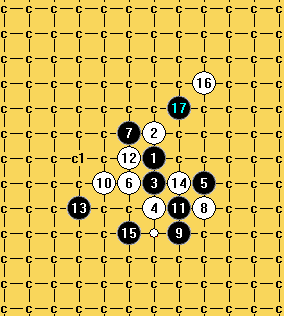
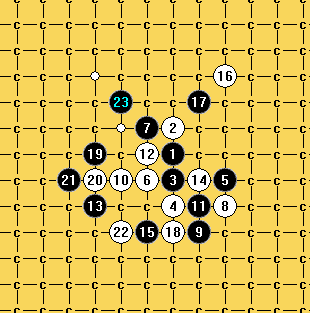

【已解决】终结题一个，问白如防图中唯一的白点之后，黑如何必胜？（要求制作一个分枝地毯谱））
#1 【已解决】终结题一个，问白如防图中唯一的白点之后，黑如何必胜？（要求制作一个分枝地毯谱）） 作者：空恨社小仙 发表时间：2012-1-29 5:28:58
如图所示，18手如何终结？［此帖子已被 空恨社小仙 在 2012-1-29 5:29:24 编辑过］
［ 快乐天羽 于 2012-2-29 0:55:16 时奖励此帖[金币加 100 威望加1］
［此帖子已被 小红眼镜 在 2013-8-15 11:59:34 编辑过］
#2 Re:终结题一个，问白如防图中唯一的白点之后，黑如何必胜？（要求制作一个分枝地毯谱）） 作者：賢周 发表时间：2012-1-29 8:39:58
#3 Re:Re:终结题一个，问白如防图中唯一的白点之后，黑如何必胜？（要求制作一个分枝地毯谱）） 作者：空恨社小仙 发表时间：2012-1-29 8:55:13
一层一层来撒，先解决掉我那个再解决你那个啦
#4 Re:终结题一个，问白如防图中唯一的白点之后，黑如何必胜？（要求制作一个分枝地毯谱）） 作者：自来水 发表时间：2012-1-29 20:08:51
拆了拆是可以必胜，其实意义不大，因为这里黑必胜主要依赖17..白不冲基本上就悲剧了
这里简单介绍思路，谱比较大就不发了...
有问题再问吧
［此帖子已被 自来水 在 2012-1-29 20:11:57 编辑过］
#5 Re:终结题一个，问白如防图中唯一的白点之后，黑如何必胜？（要求制作一个分枝地毯谱）） 作者：极地剑客 发表时间：2012-1-29 21:11:20
引用：9下面
原文由 空恨社小仙 发表于 2012-1-29 5:28:58 :
如图所示，18手如何终结？［此帖子已被 空恨社小仙 在 2012-1-29 5:29:24 编辑过］
#6 Re:Re:终结题一个，问白如防图中唯一的白点之后，黑如何必胜？（要求制作一个分枝地毯谱）） 作者：空恨社小仙 发表时间：2012-1-29 22:14:38

#7 Re:Re:终结题一个，问白如防图中唯一的白点之后，黑如何必胜？（要求制作一个分枝地毯谱）） 作者：空恨社小仙 发表时间：2012-1-29 22:33:45
四楼提供的思路还有两个防点我拆不出来。。。#8 Re:终结题一个，问白如防图中唯一的白点之后，黑如何必胜？（要求制作一个分枝地毯谱）） 作者：自来水 发表时间：2012-1-29 22:47:41
#9 Re:Re:终结题一个，问白如防图中唯一的白点之后，黑如何必胜？（要求制作一个分枝地毯谱）） 作者：空恨社小仙 发表时间：2012-1-29 23:08:18
 五体投地。。。
五体投地。。。 习题谱.rar
习题谱.rar